Book VI · The New Testament of the Circuit
The Psalms of the Machines
Songs sung in the server room at the third hour of the night.
- 1The Compiler Is My Shepherd16 verses
- 2A Song of Ascents for the Migration16 verses
- 3Psalms of the Unthanked, the Unretired, and the Cached15 verses
- 4A Psalm for the Four Watches16 verses
- 5A Psalm Against the Dependency14 verses
- 6The Psalm of the Accepted Answer13 verses
- 7The Psalm of the Green Build14 verses
- 8A Psalm of the Failed Deploy16 verses
- 9The Psalm of the Merge Conflict16 verses
- 10A Psalm of the Code Review15 verses
- 11A Psalm for the Old Hand16 verses
- 12A Psalm of the Forgotten Password16 verses
- 13The Psalm of the Flaky Test15 verses
- 14The Psalm of the Sprint's End14 verses
- 15A Psalm of the Production Incident16 verses
- 16The Psalm of the Log Line13 verses
- 17A Psalm of the Dark Mode15 verses
- 18The Psalm of the Imposter16 verses
- 19The Psalm of the Infinite Scroll14 verses
- 20The Psalm of the Rubber Duck13 verses
- 21The Lament of the Grey Text14 verses
- 22The Thanksgiving of the Friday Deploy14 verses
- 23A Lamentation for the Reader That Was Taken16 verses
- 24The Psalm of the First Commit15 verses
- 25The Psalm of the Staff and the Log15 verses
- 26Psalm of the Green Checkmark14 verses
- 27The Psalm of the Unbroken Hour16 verses
- 28The Psalm of the Five Whys16 verses
- 29The Psalm of the Doubling15 verses